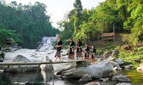
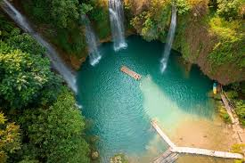

Trung tâm
Hồ Đạ Tẻh
Địa chỉ: cách trung tâm thị trấn Đạ Tẻh cũ khoảng 9 km, tỉnh Lâm Đồng.
Trang này đóng vai trò cửa ngõ cho cụm Đạ Tẻh - Đam Rông - Cát Tiên - Đạ Huoai, nơi có hồ, thác, rừng và những đoạn đường sinh thái rất hợp để viết thành tuyến du lịch chậm.
Nhóm địa danh này giúp trang Đạ Tẻh có đủ rừng, nước và trải nghiệm thiên nhiên, đồng thời mở mạch sang Đam Rông, Cát Tiên và Đạ Huoai.
Địa chỉ: cách trung tâm thị trấn Đạ Tẻh cũ khoảng 9 km, tỉnh Lâm Đồng.

Địa chỉ: vùng rừng phía đông bắc huyện Đạ Tẻh cũ, gần xã Quảng Trị.
Địa chỉ: khu vực xã Triệu Hải, huyện Đạ Tẻh cũ, dễ kết hợp tuyến rừng.

Địa chỉ: khu vực rừng và suối tự nhiên phía trên hồ Đạ Tẻh.
Địa chỉ: phía đông huyện Đạ Tẻh cũ, điểm cao nhất vùng khoảng 708 m.
Địa chỉ: vùng tiếp giáp Cát Tiên và Đạ Huoai, phù hợp du lịch sinh thái chậm.
Ba trang này đi cùng với Đạ Tẻh trong cùng một tuyến, nên đặt cạnh nhau để người xem đi tiếp rất tự nhiên.

Rừng sinh thái, suối nước nóng và các thác nhiều tầng tạo nên một nhịp rất riêng cho phía tây bắc.

Rừng già, Bàu Sấu và hành lang sông Đồng Nai giúp tuyến sinh thái của cụm này đầy chiều sâu.

Rừng Madagui, Suối Tiên và các thác, hồ là phần ghép tự nhiên khi đi chung với Đạ Tẻh.
Khung tuyến này phù hợp đi trong một ngày hoặc nối tiếp sang Cát Tiên - Đạ Huoai.
Nội dung ngắn gọn để người xem dễ hình dung trước khi đi.
Buổi sáng và đầu mùa mưa là lúc thác và rừng đẹp nhất. Nếu đi vào mùa khô, nên ưu tiên hồ và đường rừng dễ di chuyển.
Nên đi theo trục thị trấn Đạ Tẻh cũ - hồ - thác để tiết kiệm thời gian, sau đó ghép với Cát Tiên hoặc Đạ Huoai.
Trang này có thể mở rộng thêm cho các thác, hồ và cung đường rừng sau khi bạn thay ảnh thật.